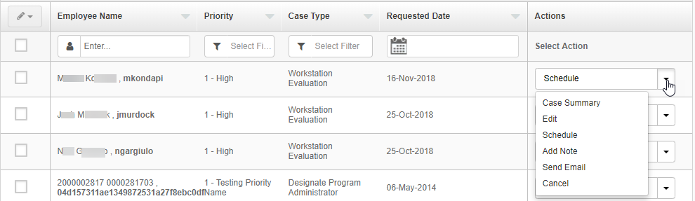
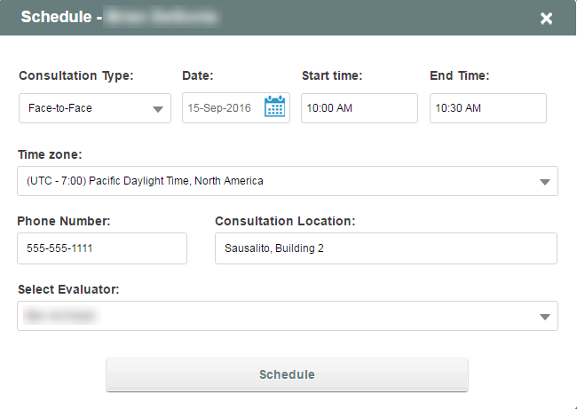
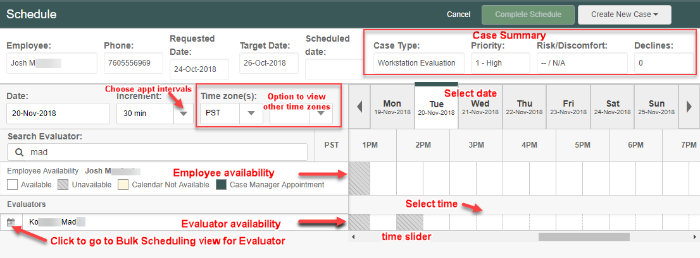
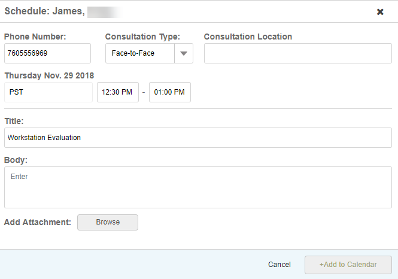
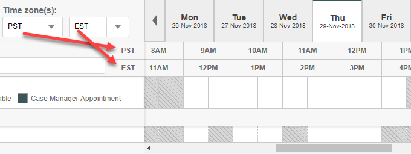
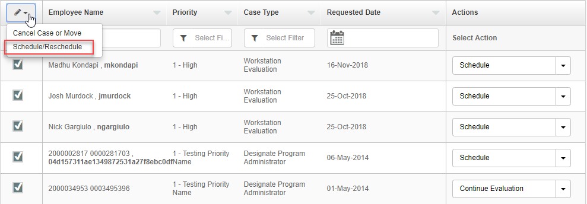
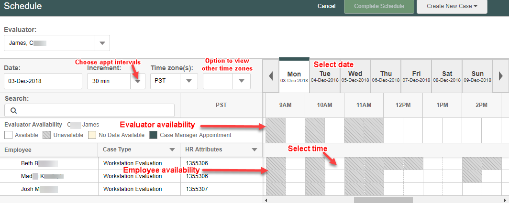

Evaluations can be scheduled from the To Do list or from the Cases page, if you have the appropriate permission.
To schedule or re-schedule an evaluation:
Find the employee you want to schedule from the To Do List or the Cases page. In the Action column, click Schedule. You can select the Schedule or Re-schedule option from the action list if it is not shown by default.

The Scheduling dialog is displayed to set up the appointment details.
If you have the Advanced Scheduling view, integrated with Exchange calendar, the Calendar view will be displayed. See the Calendar View below to continue. Otherwise, the Schedule dialog will be displayed.
Select the Consultation Type, Date and Time. Be sure to select the correct time zone, if necessary, then click Schedule.

Advanced Scheduling with Microsoft Exchange Integration
When Exchange integration is configured for your system, you can set up appointments using the calendar availability for Evaluee(s) and Evaluator(s). Three views are available:
Employee Scheduling View:
To schedule an appointment for a single employee:
From the To Do List, select the Schedule or Reschedule option for the employee.
Alternatives: From the Cases page, you can click on the evaluator the case is assigned to and select Schedule/Reschedule. From the Case Summary for an employee, you can click Assign & Schedule/Reschedule.
The Employee Scheduling View is displayed. The Employee's calendar availability is shown, with Evaluator availability below. You can select an Evaluator from those displayed or use the Evaluator Search to search by name.

Time Zone(s): The time zone shown by default is your time zone, taken from computer settings. If you are setting up appointments for employees and evaluators in different time zones, you can view the times in their time zone. (See time zone notes below.)
Select an available time in the Evaluator's calendar.
The scheduling dialog is displayed. The Evaluator's name is displayed at the top.

Complete the appointment details.
The start time defaults to the time selected in the calendar, while the end time equals the start time plus the interval in the calendar view. However, you may enter different times for both fields.
Use the Body box to enter any desired comments to add to the email. You may also add attachments.
Click Add to Calendar to complete the schedule.
You will be returned to the calendar page and the appointment will be shown in solid color in the schedule. The scheduled appointment will not be saved until you click Complete Schedule.
Select Complete Schedule to save the appointment.
An email invite will be sent to both the Evaluator and Evaluee. The appointment will be added to their calendars, once accepted.
Employees or evaluators in different time zone than shown? The default time zone shown is your time zone (taken from your computer settings). If you are setting up appointments for employees and evaluators in different time zones, you can view the times in their time zone. Normally, the first time zone should be the employee's if in the Employee view, or the evaluator's if in the Evaluator view. The time zone that shows in the scheduling dialog when you select a time, is the first time zone.

Evaluator's Scheduling View
You can manage multiple appointments for an Evaluator using the Evaluator's Scheduling View.
To schedule multiple appointments for an Evaluator from the To Do List:
From the To Do List, select one or more users.
You can set up a filter to display the set of users for whom you want to schedule. For example, you can apply an HR attribute to filter by location to schedule employees in the same vicinity.

After selecting the employees, select the Edit pencil at the top of the selection column. Select Schedule/Reschedule from the drop-down options.
The Evaluator's Scheduling view is displayed. Any filters you have applied in the To Do list will be carried over to the Employee Scheduling view.
